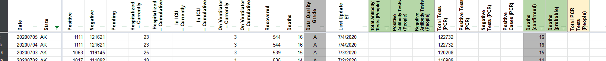
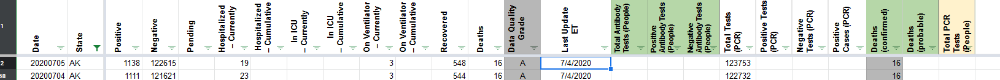
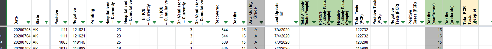
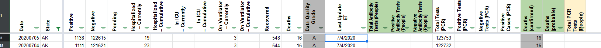

[AK] Histoicals 7/5 update was missed by pub shift
BEFORE 
AFTER 
Comments
camille-le commented on July 7, 2020 at 1:20 pm
Per Slack thread, we updated July 5 already. Closing this issue.
BEFORE 
AFTER 
Per Slack thread, we updated July 5 already. Closing this issue.
Hey @muamichali, would this update be for July 6? I checked out two of the AK press releases below. This is what I think should be the updated for July 6:
Source
Source